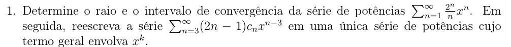
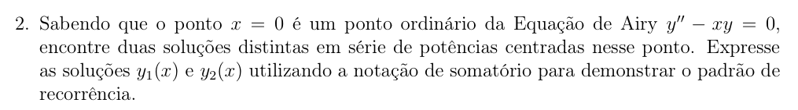
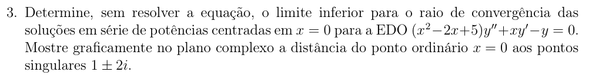
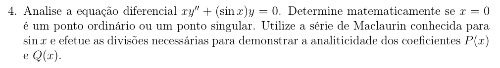

Soluções das EDOs por Séries: Funções Especiais
Autor: Luiz Felipe Souza de Lima Silva
Instituição: Universidade Federal do Pará (UFPA) - Campus Universitário de Tucuruí - Faculdade de Engenharia Elétrica
1. Introdução
Este relatório apresenta as resoluções detalhadas de problemas envolvendo equações diferenciais ordinárias (EDOs) e suas soluções em séries de potências.
2. Resoluções
2.1. Questão 1

> Conceito chave:> Define-se o intervalo de convergência aplicando o teste da razão ao coeficiente \(c_n\): > > Seja: > \[ \sum_{n=0}^{\infty} c_n (x - a)^n \] > > Aplicamos o teste da razão aos coeficientes \(c_n\): > \[ L = \lim_{n \to \infty} \left| \frac{c_{n+1}}{c_n} \right| \] > > O raio será o inverso de \(L\) e o intervalo de convergência por definição é \(|x| < R = \frac{1}{L}\).
Solução da Questão 1:
Dada a série: \[ \sum_{n=1}^{\infty} \frac{2^n}{n} x^n \qquad \text{temos} \qquad c_n = \frac{2^n}{n} \]
Calculando o limite \(L\): \[ L = \lim_{n \to \infty} \left| \frac{c_{n+1} (x-0)^{n+1}}{c_n (x-0)^n} \right| = \lim_{n \to \infty} \left| \frac{\frac{2^{n+1}}{n+1}}{\frac{2^n}{n}} \right| \]
\[ L = |x| \cdot \lim_{n \to \infty} \left| \frac{2^{n+1}}{n+1} \cdot \frac{n}{2^n} \right| = \lim_{n \to \infty} \left| \frac{2^1 \cdot n}{n+1} \right| \]
\[ \therefore L = \lim_{n \to \infty} \left| \frac{2n}{n(1 + \frac{1}{n})} \right| = \lim_{n \to \infty} \left| \frac{2}{1} \right| = 2 \]
\(\therefore\) Raio de convergência \(R = \frac{1}{L} = \frac{1}{2}\).
Intervalo de convergência: \[ |x| \cdot 2 < 1 \implies x < \frac{1}{2} \quad \text{ou} \quad -x < \frac{1}{2} \rightarrow x > -\frac{1}{2} \]
Portanto, a série converge no intervalo: \[ -\frac{1}{2} < x < \frac{1}{2} \]
Reduzindo a segunda série: \[ \sum_{n=3}^{\infty} (2n - 1) c_n x^{n-3} \] Fazendo a substituição \(k = n - 3 \Rightarrow n = k + 3\):
\[ \text{Portanto:} \quad \sum_{k=0}^{\infty} [2(k+3) - 1] c_{k+3} x^k = \sum_{k=0}^{\infty} (2k + 5) c_{k+3} x^k \]
2.2. Questão 2

Conceito chave:
Devido ao ponto \(x=0\) ser um ponto ordinário (regular), podemos admitir a seguinte hipótese de solução: \[ y(x) = \sum_{n=0}^{\infty} C_n x^n \]
Solução da Questão 2:
Derivando a hipótese de solução: \[ y(x) = \sum_{n=0}^{\infty} C_n x^n ; \quad y'(x) = \sum_{n=1}^{\infty} C_n (n) x^{n-1} ; \quad y''(x) = \sum_{n=2}^{\infty} C_n (n)(n-1) x^{n-2} \]
Substituindo na Equação de Airy \(y'' - xy = 0\): \[ \begin{aligned} \sum_{n=2}^{\infty} C_n (n)(n-1) x^{n-2} - x \sum_{n=0}^{\infty} C_n x^n &= 0 \\ \therefore \sum_{n=2}^{\infty} C_n (n)(n-1) x^{n-2} - \sum_{n=0}^{\infty} C_n x^{n+1} &= 0 \end{aligned} \]
Expandindo o primeiro termo da primeira série para igualar as potências: \[ \begin{aligned} [C_2(2)(1) + C_3(3)(2)x + \dots] - [C_0 x + C_1 x^2 + C_2 x^3 + \dots] &= 0 \\ 2C_2 + \sum_{n=3}^{\infty} C_n (n)(n-1) x^{n-2} - \sum_{n=0}^{\infty} C_n x^{n+1} &= 0 \end{aligned} \]
Logo, isolando os termos independentes: \[ 2C_2 = 0 \rightarrow C_2 = 0 \]
Mudança de variáveis da soma: Para a primeira soma: \(K = n - 2 \rightarrow n = K + 2\) (inicia em \(K=1\)) Para a segunda soma: \(K = n + 1 \rightarrow n = K - 1\) (inicia em \(K=1\))
Logo: \[ \sum_{K=1}^{\infty} C_{K+2} (K+2)(K+1) x^K - \sum_{K=1}^{\infty} C_{K-1} x^K = 0 \] \[ \sum_{K=1}^{\infty} x^K [ C_{K+2} (K+2)(K+1) - C_{K-1} ] = 0 \]
O que nos dá a relação de recorrência: \[ C_{K+2} (K+2)(K+1) - C_{K-1} = 0 \]
Calculando os primeiros coeficientes para \(K \ge 1\): * P/ \(K=1\): \(C_3 (3)(2) - C_0 = 0 \rightarrow C_3 = \frac{C_0}{6} = \frac{C_0}{3!}\) * P/ \(K=2\): \(C_4 (4)(3) - C_1 = 0 \therefore C_4 = \frac{C_1}{4 \cdot 3}\) * P/ \(K=3\): \(C_5 (5)(4) - C_2 = 0 \rightarrow C_5 = 0\) * P/ \(K=4\): \(C_6 (6)(5) - C_3 \rightarrow C_6 = \frac{C_3}{6 \cdot 5} = \frac{C_0}{3 \cdot 2 \cdot 6 \cdot 5}\) * P/ \(K=5\): \(C_7 (7)(6) - C_4 \therefore C_7 = \frac{C_1}{4 \cdot 3 \cdot 7 \cdot 6}\) * P/ \(K=6\): \(C_8 (8)(7) - C_5 = 0 \rightarrow C_8 = 0\)
Portanto, a solução geral é: \[ y(x) = C_0 + C_1 x + C_2 x^2 + C_3 x^3 + C_4 x^4 + \dots \]
\[ \begin{aligned} y(x) = & C_0 + C_1 x + 0 \cdot x^2 + \frac{C_0}{3!} x^3 + \frac{C_1}{4 \cdot 3} x^4 + 0 \cdot x^5 \\ & + \frac{C_0}{3 \cdot 2 \cdot 6 \cdot 5} x^6 + \frac{C_1}{4 \cdot 3 \cdot 7 \cdot 6} x^7 + 0 \cdot x^8 + \dots \end{aligned} \]
Agrupando \(C_0\) e \(C_1\): \[ \therefore y(x) = C_0 \left( 1 + \frac{x^3}{3!} + \frac{x^6}{3 \cdot 2 \cdot 6 \cdot 5} + \dots \right) + C_1 \left( x + \frac{x^4}{4 \cdot 3} + \frac{x^7}{4 \cdot 3 \cdot 7 \cdot 6} + \dots \right) \]
2.3. Questão 3

> Conceito chave:> Para determinar o limite inferior para o raio de convergência da série, devemos verificar a distância do ponto de singularidade mais próximo até o centro da série no plano complexo.
Solução da Questão 3:
Dada a EDO: \[ (x^2 - 2x + 5)y'' + xy' - y = 0 \quad \rightarrow \quad \text{centrado em } x=0 \]
As singularidades ocorrem quando \(x^2 - 2x + 5 = 0\). Resolvendo, temos que: \[ (1+2j) \quad \text{e} \quad (1-2j) \quad \text{são os pontos singulares da série.} \]
A distância \(r\) da origem (centro em \(x=0\)) até o ponto singular \(P(1+2j)\) no plano complexo é dada pelo módulo: \[ d_{OP} = |1+2j| = \sqrt{1^2 + 2^2} = \sqrt{5} \]
Portanto, o limite inferior do raio de convergência é \(\sqrt{5}\).
2.4. Questão 4

Solução da Questão 4:1ª Solução (Aproximação): Dada a equação: \[ xy'' + \text{sen}(x)y = 0 \] Dividindo por \(x\): \[ y'' + \frac{\text{sen}(x)}{x} y = 0 \]
Para ângulos muito pequenos (próximos de \(x \to 0\)), podemos usar a aproximação \(\text{sen}(x) \simeq x\). Portanto, no limite: \[ y'' + \frac{x}{x}y = 0 \longrightarrow y'' + y = 0 \] Logo, a equação é analítica em \(x=0\).
2ª Solução (Série de Taylor): Seja \(P(x) = \frac{\text{sen}(x)}{x}\) o coeficiente de \(y\): \[ y'' + \underbrace{\left( \frac{\text{sen}(x)}{x} \right)}_{\text{Expansão de Taylor em } x=0} y = 0 \]
Sabemos que a expansão de Maclaurin para \(\text{sen}(x)\) é: \[ \text{sen}(x) = \sum_{n=0}^{\infty} \frac{(-1)^n x^{2n+1}}{(2n+1)!} = x - \frac{x^3}{3!} + \frac{x^5}{5!} - \dots \]
Substituindo na expressão de \(P(x)\): \[ \begin{aligned} P(x) &= \frac{1}{x} \sum_{n=0}^{\infty} \frac{(-1)^n x^{2n+1}}{(2n+1)!} \\ P(x) &= \frac{1}{x} \left( x - \frac{x^3}{3!} + \frac{x^5}{5!} - \frac{x^7}{7!} + \dots \right) \\ P(x) &= 1 - \frac{x^2}{3!} + \frac{x^4}{5!} - \frac{x^6}{7!} + \dots \end{aligned} \]
Conclusão: \[ \therefore P(x) = \sum_{n=0}^{\infty} \frac{(-1)^n x^{2n}}{(2n+1)!} \] Esta série converge para todo \(x \in \mathbb{R}\). Portanto, as divisões não resultam em descontinuidades, comprovando que \(x = 0\) é um ponto ordinário.